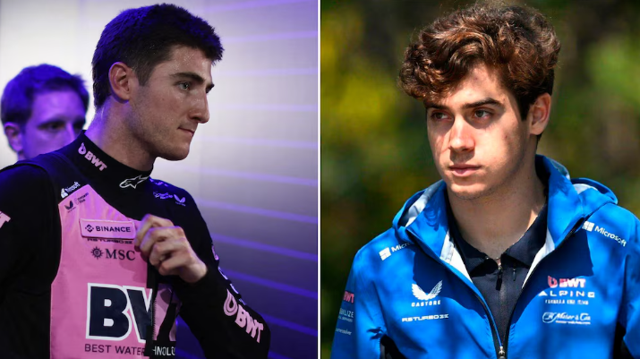

Aranceles: el Gobierno cumple con uno de los reclamos de EEUU y simplificará la importación de bienes de capital usados
La comparación entre Jack Doohan y Franco Colapinto que se hizo viral y deja mal parado al australiano
El australiano no tuvo un buen comienzo en la Fórmula 1, mientras que el argentino protagonizó un inicio esperanzador con Williams en 2024
La comparación de los primeros resultados en la Fórmula 1 de Doohan y Colapinto
Jack Doohan volvió a tener un rendimiento irregular en el Gran Premio de Bahréin y terminó decimocuarto tras recibir una penalización sobre el cierre de la carrera por excederse los límites de pista. La decepcionante actuación quedó en el punto de mira a partir del excelente resultado que obtuvo su compañero, Pierre Gasly, que finalizó en la séptima posición y sumó los primeros puntos de Alpine en la temporada. A esto se suma la presión sobre el australiano porque Franco Colapinto es piloto de reserva.
En este contexto, las comparaciones entre ambos son inevitables, aunque una de ellas captó una particularidad en los resultados del corredor oceánico y se viralizó rápidamente en las redes sociales. Dicho paralelismo se centra en las primeras cinco presentaciones por parte de Colapinto y Doohan, quien siempre terminó detrás del puesto 13. En cambio, el argentino se mantuvo entre los 12 mejores. Incluso, logró sumar puntos tras finalizar octavo en Azerbaiyán y décimo en Austin.
Lo Último | Argentina
Iker Muniain mostró su método para preparar el mate en la TV de España: “Chaval, lo que quema esto”
Tras una pelea en un partido de fútbol en Moreno, un menor apuñaló a un rival hasta matarlo: está preso
Un ex campeón con la Juventus quedó envuelto en un escándalo por la reventa de Rolex usados para pagar deudas por el juego
La separación de Mariano Martínez y Tryana Ibañez después de dos años juntos: “Hace un mes que ya no están”